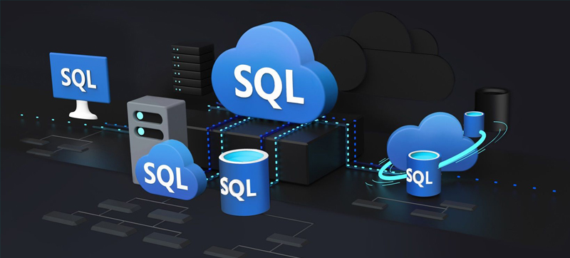

SQL PROJECT PAGE
In this project, data were imported from a csv file to MS SQL Server using BULK INSERT. The part of the data needed for the project at hand was extracted from the imported data and placed in a table of its own. The data was cleaned and analysed in line with the requirements of the project.


This is a complete data analysis project using MS Excel. It involves data cleaning, data processing, data analysis and data dashboard creation in Excel.

This project holds analysis and visualisations of number of livebirths, number of stillbirths, Total Fertility Rate and Age Specific Fertility Rate in England and Wales from 1938 t0 2021.
This page contains supplementary information relevant to both SQL and EXCEL projects above. It contains all queries wriitten in SQL and the execution results in .docx format.